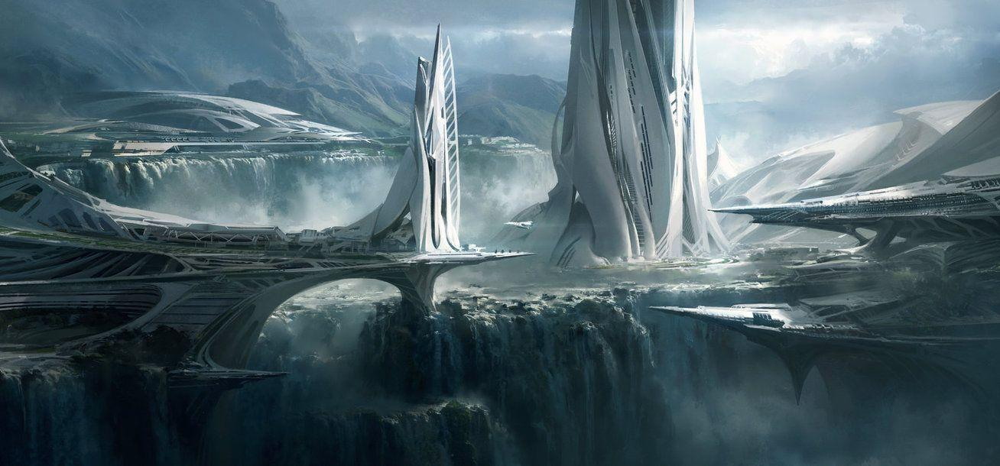
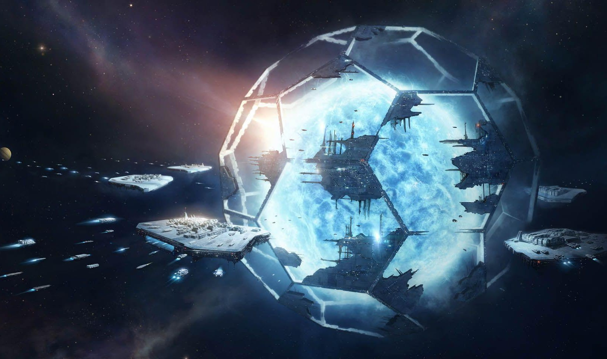

Що таке Stellaris?
Stellaris – це глобальна стратегія від Paradox Interactive, яка дозволяє гравцям керувати власною галактичною імперією. Гра поєднує елементи 4X-стратегії (дослідження, розширення, експлуатація та знищення) з глибокою симуляцією суспільства, дипломатії та війни. Тепер розглянемо її унікальні особливості докладніше.
Генерація всесвіту
На початку кожної гри Stellaris створює унікальну галактику – її розміри, форма, кількість зіркових систем і навіть густина населення можуть змінюватися залежно від налаштувань.
Галактика наповнюється випадковими імперіями, нейтральними цивілізаціями та стародавніми імперіями-«прародичами», які колись правили всесвітом, а тепер доживають свої останні дні або ховаються в тіні. Це робить кожну партію унікальною: ви можете потрапити у світ, де панують агресивні ксенофоби, або в мирний союз дипломатичних націй.
Крім того, кожна зоряна система створюється з урахуванням фізичних законів – зірки мають планети, супутники, астероїдні пояси та чорні діри.
Гнучкість у створенні цивілізації
Перед початком гри ви створюєте власну імперію, вибираючи:
- Вигляд раси (рептилоїди, гуманоїди, комахоподібні, штучні інтелекти тощо).
- Ідеологію (поборники миру, войовничі фанатики,вчені-експериментатори).
- Форму правління (демократія, монархія, мегакорпорація, колективний розум, імперія машин тощо).
- Стиль кораблів (включаючи унікальні форми, кольори та навіть архітектурні деталі).
Це дає змогу створити унікальну цивілізацію, яка грається зовсім інакше, ніж інші. Наприклад, можна побудувати соціалістичну утопію, космічний торговельний конгломерат або імперію, що живиться рабством і терором.
Глибока дипломатія
У грі є безліч варіантів взаємодії з іншими цивілізаціями:
- Дипломатичні союзи – можна укладати мирні угоди, створювати оборонні пакти або федерації, які згодом можуть перетворитися на єдину державу.
- Галактичний сенат – орган, де імперії голосують за закони, що впливають на всіх (наприклад, заборона рабства або розширення військових бюджетів).
- Шпигунство – можливість розвідки, диверсій і політичних змов.
- Взаємодія з незалежними цивілізаціями – можна їх інтегрувати, використовувати як маріонеткові держави або завоювати.
Це робить Stellaris більш живою – інші імперії мають свої інтереси, змінюють стратегію та реагують на ваші дії.
Живий всесвіт
Ці фактори роблять кожну партію непередбачуваною:
- Кризи кінця гри – події, які можуть змінити весь баланс сил (повстання машин, вторгнення з іншого виміру або галактична чума).
- Древні імперії – колись могутні цивілізації, які можуть раптово прокинутися та спробувати повернути собі галактичне панування.
- Загадкові артефакти – їх можна знайти під час досліджень, і вони дають унікальні бонуси.
- Незалежні фракції – колонії та сепаратисти можуть повстати, що змушує вас займатися внутрішньою політикою.
Гра дає максимальну свободу в управлінні імперією та пропонує постійні виклики. Завдяки процедурній генерації та глибоким механікам, вона залишається цікавою навіть після сотень годин гри. Якщо ви мрієте керувати галактичною цивілізацією, то Stellaris – найкраща гра для цього.
Додаткове завдання
Maecenas lacinia felis nec placerat sollicitudin. Quisque placerat dolor at scelerisque imperdiet. Phasellus tristique felis dolor.
Maecenas elementum in risus sed condimentum. Duis convallis ante ac tempus maximus. Fusce malesuada sed velit ut dictum. Morbi faucibus vitae orci at euismod. Integer auctor augue in erat vehicula, quis fermentum ex finibus.
Mauris pretium elit a dui pulvinar, in ornare sapien euismod. Nullam interdum nisl ante, id feugiat quam euismod commodo. Sed ultrices lectus ut iaculis rhoncus. Aenean non dignissim justo, at fermentum turpis. Sed molestie, ligula ut molestie ultrices, tellus ligula viverra neque, malesuada consectetur diam sapien volutpat risus. Quisque eget tortor lobortis, facilisis metus eu, elementum est. Nunc sit amet erat quis ex convallis suscipit. ur ridiculus mus.